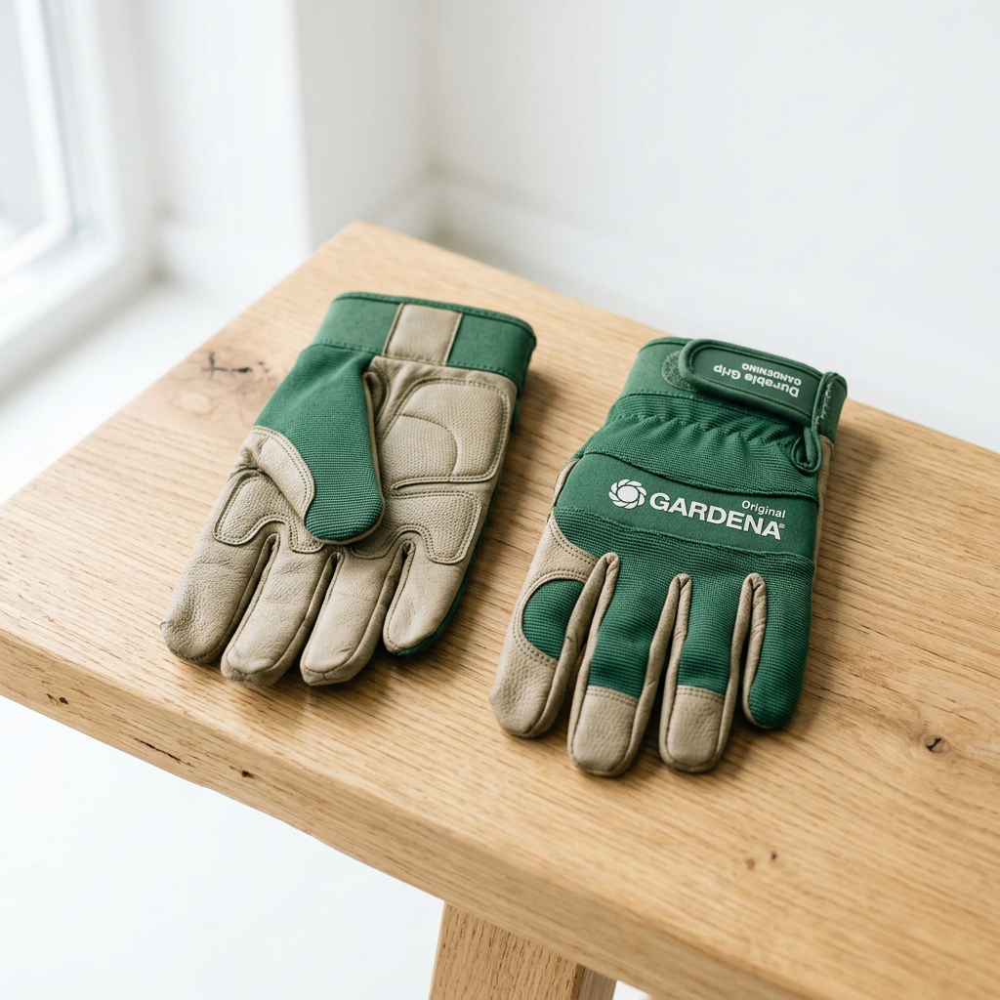

Livraison offerte dès 30€ d'achats
Garantie de 30 jours
Livraison partout en France
Paiement sécurisé
Nos meilleurs accessoires de jardinage par Gardena

Les gants de jardinage
6.23€
Les gants de jardinage sont des accessoires indispensables conçus pour protéger les mains lors des travaux extérieurs, évitant coupures et irritations tout en assurant confort et précision.
Conseil d'expert
Pour choisir les meilleurs accessoires de jardinage, il est essentiel de considérer la qualité des matériaux, l'ergonomie pour un confort optimal, et la compatibilité avec vos besoins spécifiques. Optez pour des outils durables et adaptés à votre type de jardin pour garantir une expérience de jardinage agréable et efficace.